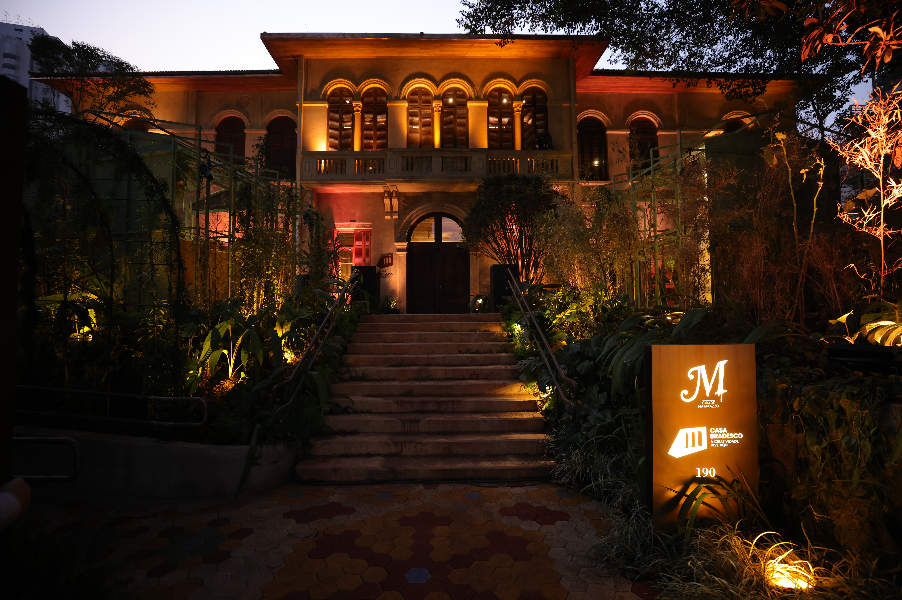
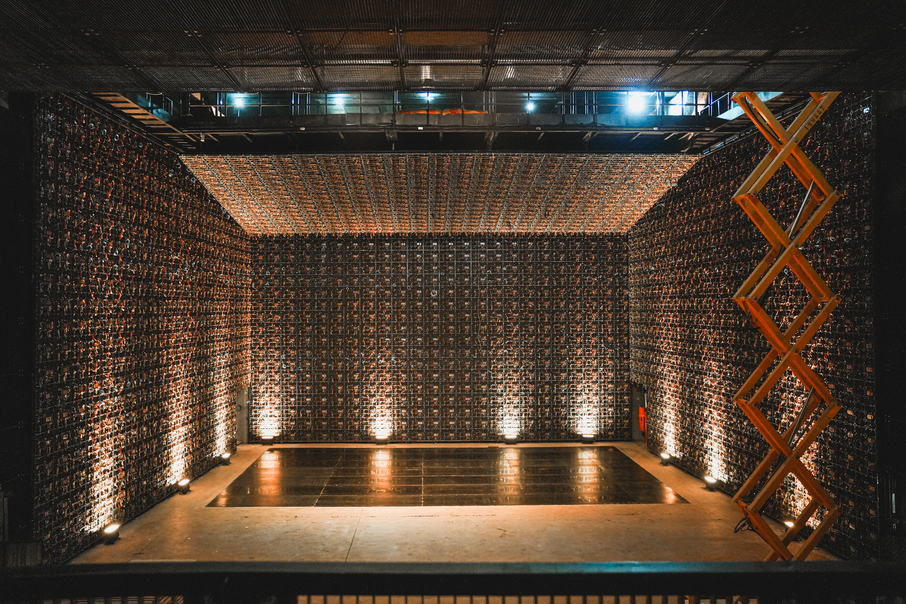
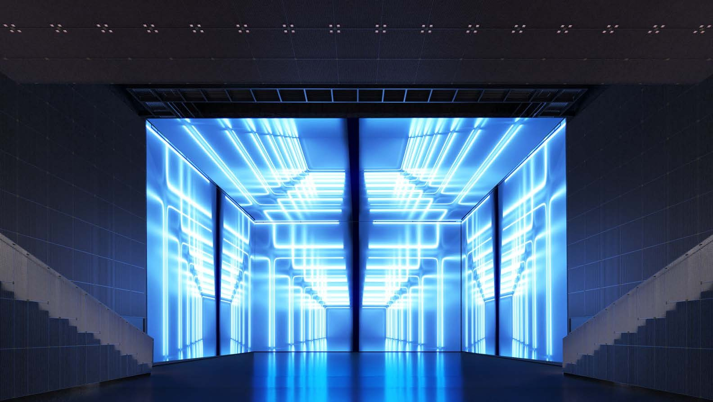
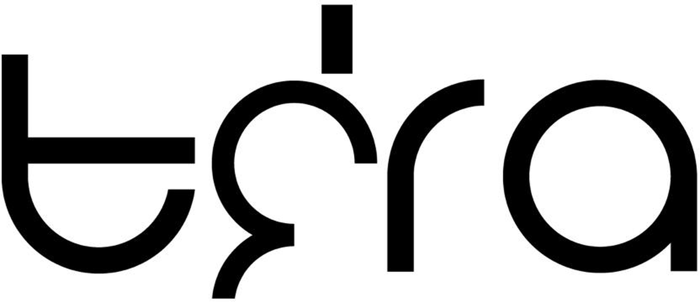
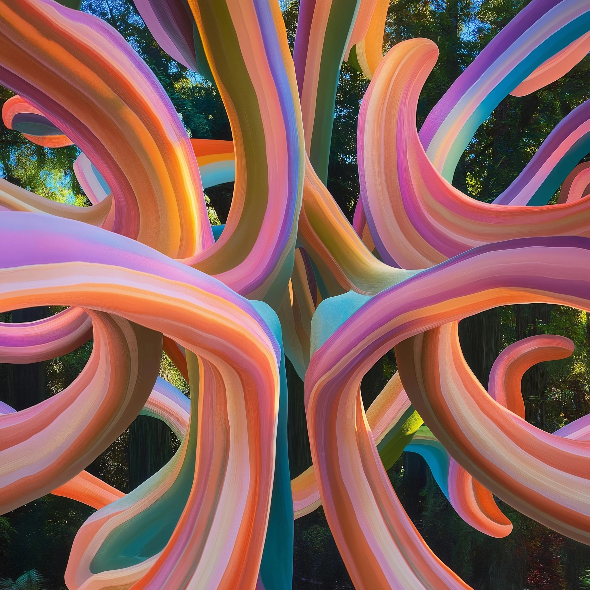
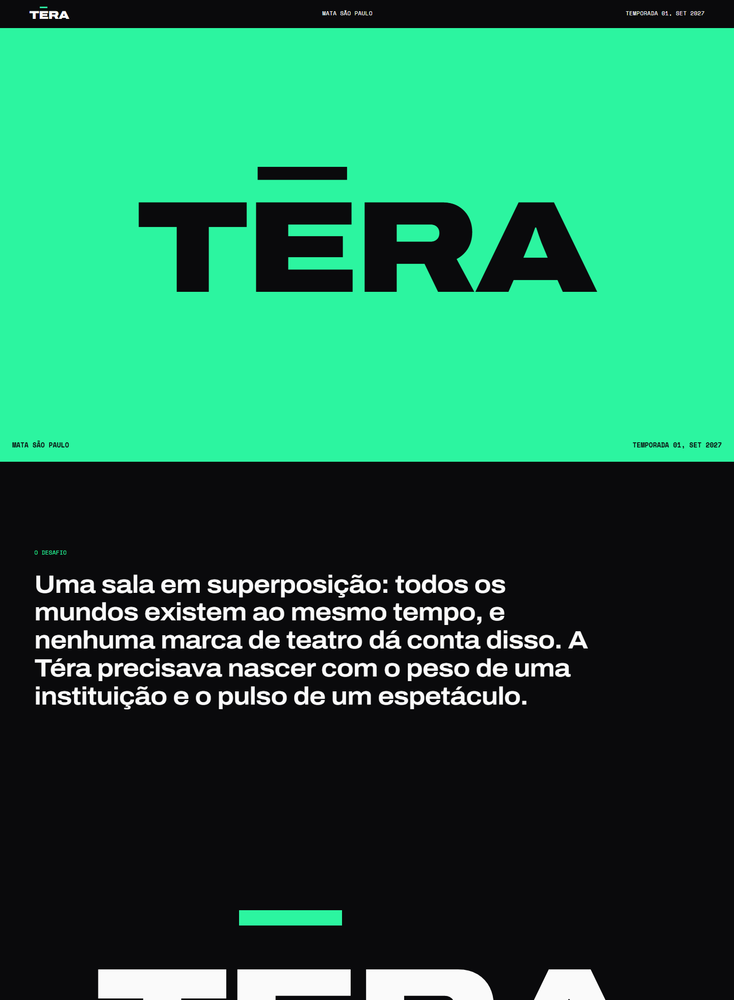
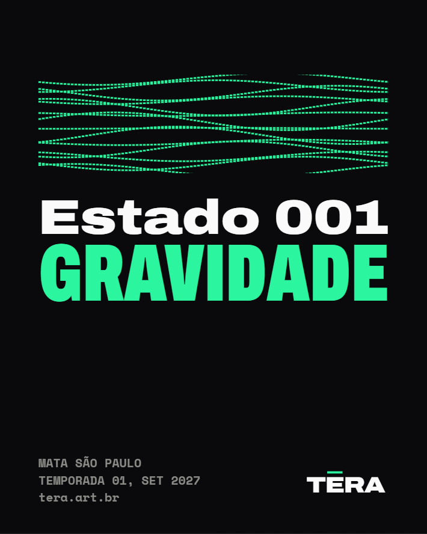

TÉRA / MATA SÃO PAULO — DOCUMENTO DE PENSAMENTO
Do briefing à
identidade
O raciocínio completo em seis passos: o que o cliente nos deu, o que lemos nele, e cada decisão que tomamos. Ilustre trocando ou somando arquivos em fluxo/media/ — imagens e vídeos entram no lugar dos slots.
O LUGAR
Um patrimônio que
vira plataforma
O briefing entrega dois ativos que ninguém pode copiar juntos: o complexo histórico Matarazzo regenerado na Mata São Paulo e o maior painel de LED indoor da América Latina (32K) dentro dele. A física do lugar é o ponto de partida de tudo.


↓ se o lugar é único, o problema não é divulgar…
O PROBLEMA
Não é lançar uma sala.
É fundar uma categoria
O próprio cliente nomeia o desafio: "espetáculos multidimensionais" não existem no imaginário do público. E o atalho fácil — "sala imersiva" — é exatamente o rótulo-commodity que a marca precisa superar (o deck chega a usar "immersive room" numa legenda: a contradição que a auditoria apontou como prioridade nº 1).

↓ e o nome já carrega a resposta…
O NOME
Téra: o extraordinário
enraizado
Três camadas num nome de quatro letras: teras (grego: prodígio, o que rompe a ordem), tera (o prefixo da escala monumental) e terra (solo, origem, matéria). O logo existente do cliente — minúsculas geométricas construídas por arcos — vira nosso material de partida, não algo a descartar.

↓ do lugar + do nome nasce a física da marca…
O CONCEITO
Toda luz nasce
do escuro
As referências do próprio deck apontam numa direção só: matéria orgânica de luz emergindo do preto — o plasma que brota das frestas do patrimônio e escorre como rio. A regra do Reveal ("não mostraremos a tela") vira princípio permanente: a tela nunca é a obra; o que se mostra é o que a atravessa.

↓ conceito assumido, cada decisão deriva dele…
AS DECISÕES
O que ficou decidido
Posicionamento
Quadrante autoral-monumental, ocupado sozinho: a Téra comissiona obras inéditas do Sul Global em infraestrutura que ninguém tem. Não licencia acervo, não aluga projeção.
As recusas
Não mostrar a tela. Não se descrever como "imersiva". Não usar gradiente chapado. Tudo que é fácil de copiar fica fora da marca.
Voz
Assombro preciso: grandiosa nas ideias, exata nas palavras. Categoria sempre por extenso, definida antes de adjetivada. Modo reticente na Fase 1.
Paleta
Preto Subsolo #0A0908 + Branco Cal #F2EFE9; espectro plasma só como matéria viva; Azul Bioluminescência #31C4FF como único acento sólido.
Wordmark
Evoluir os arcos do cliente em código paramétrico: um raio, uma espessura, kerning óptico. Dois estados: tinta institucional e vão por onde o plasma passa.
Métrica-mestra
O KPI da Fase 1 não é alcance: é a adoção espontânea do termo "espetáculos multidimensionais" pela imprensa e pelo público.
↓ e decisão sem execução não é decisão…
A EXECUÇÃO
Sistema como código
Nada aqui é mock estático: o wordmark é um gerador paramétrico (SVG exato), o plasma e os estados são engines em canvas, a apresentação é um site-case com motion real, e a plataforma verbal são 12 documentos derivados só do briefing. Tudo regenerável, tudo versionado.

